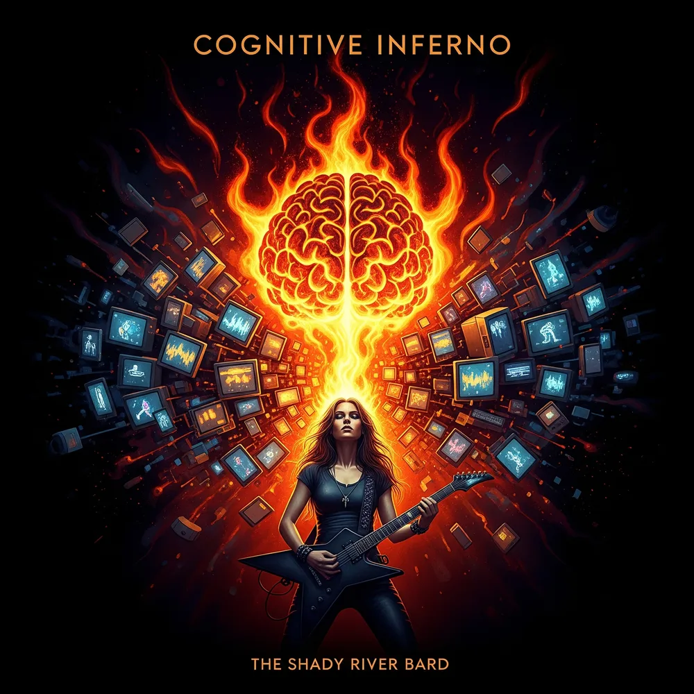

Cognitive Inferno
The Algorithmic War for Human Consciousness, Somatic Toll of Dopamine Debt, and Radical Re-Humanization
Have you ever lost an hour to a screen and wondered where the time went? Have you felt the phantom buzz of a notification in your pocket, or the low-grade, constant hum of anxiety from a world that never, ever logs off? We live our lives inside a machine we built but no longer control. Cognitive Inferno is the soundtrack to this modern condition—a visceral, 4-phase rock symphony guiding listeners through the seduction of the feed, the somatic toll of dopamine debt, the crash of terminal velocity, and the triumphant reclamation of sovereign human consciousness through conscious presence and re-humanization.
The 4-Phase Narrative Roadmap
Follow the descent into algorithmic captivity and the hard-won ascent back to sovereign presence. Click any phase below to jump directly to its track group in the vault.
Cognitive Overload vs. Sovereign Reclamation
A direct systematic comparison across 5 core dimensions of modern life—contrasting the default state of algorithmic capture with deliberate neuro-sovereignty.
| Core Dimension | The Algorithmic Inferno (Overload) | Sovereign Reclamation (Presence) |
|---|
The Internal Fire: Reclamation & Sovereignty
"Do not fight the machine with silence; kindle a conscious flame that algorithms cannot simulate." — Explore the culmination in Phase IV.
5 Pillars of the Attention War
Grounded in clinical neuroscience, behavioral psychology, and social theory. Each pillar reveals an empirical mechanism of cognitive capture and connects to corresponding songs.
The Complete Lyrics & Audio Vault
Explore official stanzas, Suno production prompts, and video streams for all 10 tracks.